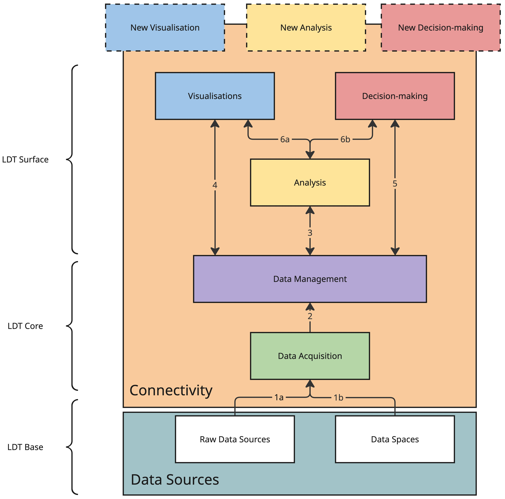
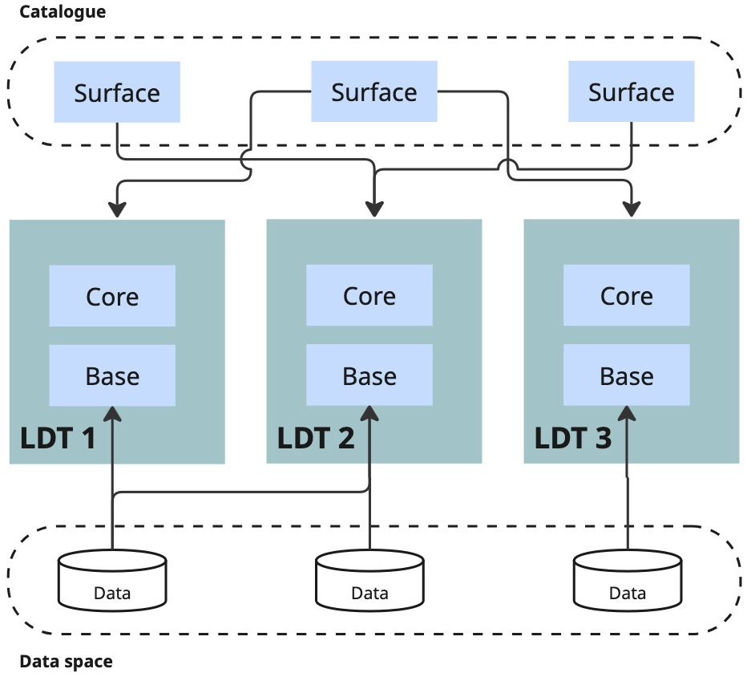
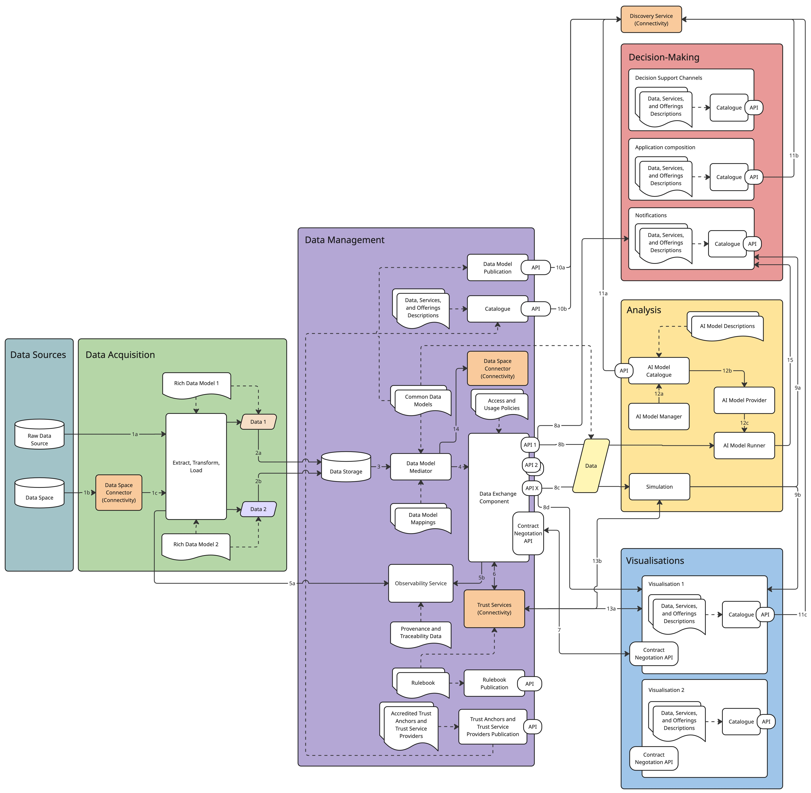
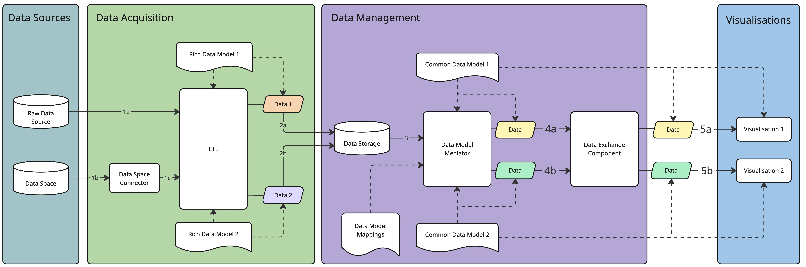
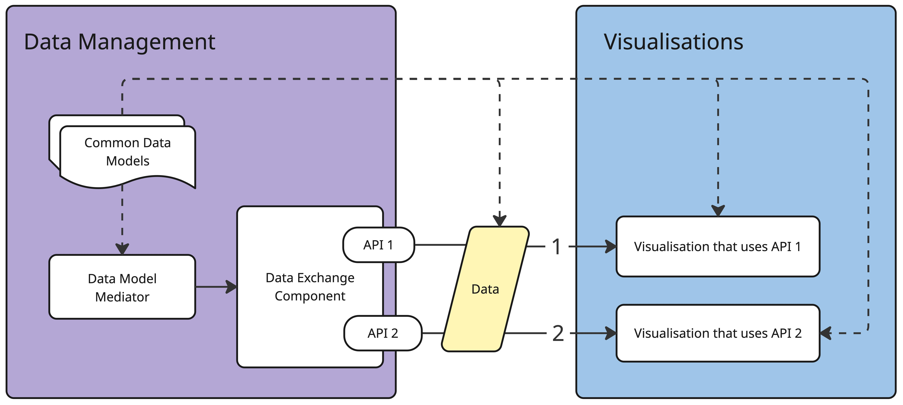

1. Introduction
The Interoperability Blueprint provides business, organisational, and technical guidelines for building our own Local Digital Twin (LDT) and interconnecting with other LDTs. An LDT is a digital representation of physical assets, systems, or processes in a defined local context (for example, city, district, building, industry, port, and airport). LDTs are based on structured data models and contextualised data. They leverage either historical data, near real-time data, or real-time data, and they enable visualisation, analysis, simulation, and reasoning services that support decision-making. First, we will elaborate on why LDTs can be useful, followed by a high-level overview of an LDT. Next, we will explain the importance of being able to add new components to an LDT (Section 1.3) and discover existing components that can be added to an LDT (Section 1.4). Finally, we will discuss how this blueprint aligns with Minimum Interoperability Mechanisms (MIMs) Plus (Section 1.5) and how data spaces and LDTs are related (Section 1.6). The remainder of this deliverable is structured as follows:
-
Chapter 2: The business and organisational building blocks and the technical building blocks.
-
Chapter 3: The workflows an LDT should support.
-
Chapter 4: The technical architecture and the business and organisational overview.
-
Chapter 5: How the business and organisational architecture and technical architecture support the workflows.
-
Chapter 6: How to build an LDT based on the other chapters.
Although this blueprint mainly guides us through the process of building a new LDT with the focus on interoperability, we can also use its recommendations for updating an existing LDT and interlinking LDTs. The scope of the blueprint isn’t to offer guidelines for every use case in which an LDT is being built or has been built, as every LDT operates in a very specific context.
1.1. Why use an LDT
An LDT is a virtual replica of a territory based on structured data models, real-time data feeds, and potentially 3D representations, which can integrate simulation models (flows, usage, impacts, and so on). It aims to dynamically represent the territory at various spatial and temporal scales to analyse, understand, anticipate, and simulate the effects of public policies, environmental hazards, climate change, development projects or disruptions. The digital twin supports strategic decision-making, consultation, foresight, and scenario design. It can even include automated decision-making and execution. It can incorporate historical datasets, time-delayed data, Building Information Modelling (BIM), Geographic Information Systems (GIS), and/or specific models (mobility, climate, energy, and so on). LDTs can offer the following capabilities to users:
-
Descriptive: Current (and past) state of the real-world asset - static and dynamic. Bidirectional connection between real-world assets and the LDT.
-
Predictive: Extends the descriptive capability by providing predictions on the way the real asset could evolve in the future, using predictive models to envision possible futures.
-
Prospective: Conducts "what-if" analyses to evaluate the potential consequences of actions.
-
Prescriptive: Extends (or, in extreme cases, executes) the prospective capability with suggested actions on the real system to achieve a given objective based on the analysis.
-
Diagnostic: Explains situations or alerts about deviations from expected conditions. Capability for evaluating what happened, especially in the case of a malfunction of the real asset.
Note that we do not derive this definition of an LDT from a formal international standard. Instead, it is a project-specific conceptualisation influenced by existing frameworks such as Digital Twins, the EU LDT Toolbox, MIMs Plus 8 on Local Digital Twins, Smart City models, and Data Spaces. While relevant standards (for example, ISO 23247, ISO/IEC 30182, and ISO 30173) provide partial guidance, there is currently no universally accepted standard definition for LDTs in the context of urban or territorial systems.
1.2. High-level overview of an LDT
An LDT has three levels, Base, Core, and Surface (see Figure 1), representing a logical data pipeline from raw data ingestion to end-user interaction, as proposed in Deliverable 3.8:
-
LDT Base contains the foundational connection to the territory through sensor data (for example, IoT), modelled assets (for example, BIM), other external information (for example, socio-economic data or from external systems) and potentially even actuators such as APIs. This level uses the component Data Sources.
-
LDT Core contains the technical components that enable data exchange, contextualisation, and transformation into usable digital representations. This level uses the components Data Acquisition, Data Management, and Connectivity.
-
LDT Surface contains the analysis components, visualisations, and supporting human-interaction tools for decision-making within a service. This level uses the components Connectivity, Analysis, Visualisations, and Decision-Making.

We describe each component below:
-
Data Sources (grey) comprise the sources of information describing the territory, including physical sensors, administrative systems, external datasets, and modelling frameworks such as BIM or simulation models. These sources include those accessible through (local) data spaces. A data space is an interoperable framework for data exchange, based on common governance principles, standards, practices and enabling services, that enables trusted data transactions between participants.
-
Data Acquisition (green) collects data from sources (arrows 1a and 1b in Figure 1) and prepares it for use through ingestion pipelines, syntactic transformations, quality checks, buffering, and staging mechanisms, ensuring data is available, reliable, and ready for contextualisation.
-
Connectivity (orange) enables secure and interoperable data exchange across components and LDTs through interfaces, connectors, access control mechanisms, and federation services that support controlled sharing and discovery.
-
Data Management (purple) manages the representation, linking, and persistence of contextual information coming from the Data acquisition component (arrow 2 in Figure 1) through ontologies, data models, and data management services that support semantic alignment and the storage of historical or evolving states.
-
Analysis (yellow) provides analytical, simulation, and AI capabilities that augment data coming from the Data Management component (arrow 3 in Figure 1). These augmentations include insights, predictions, and inferences, including algorithms for pattern detection, forecasting, optimisation, and decision support.
-
Visualisations (blue) provide dashboards, spatial and temporal views, and interactive interfaces that enable end-users to explore, interpret, and interact with he outputs of services and analyses within an LDT (arrows 4 and 6a in Figure 1).
-
Decision-Making (red) provides supporting tools for planning, participation channels, and notifications (arrows 5 and 6b in Figure 1).
A Service is not a standalone component itself, but consists of a logical composition of the analysis, visualisations, and decision-making tools. A single service may include multiple visualisations, while individual components (for example, visualisations or analysis modules) can be reused across multiple services. A Service represents a higher-level abstraction that delivers value to end-users by orchestrating multiple underlying components.
1.3. Adding a new Surface-level component to an existing LDT, reusing Core and Base-level components
Once we have built an LDT, it’s important that we can still add new Surface-level components (SLCs) to ensure that new needs, coming from new and updated use cases, can be fulfilled (see Figure 2). While adding new SLCs, we want to
-
keep the LDT’s architecture/design as is,
-
keep support for existing components, if desirable,
-
limit the changes to these existing components, and
-
limit the effects on other components if existing components need to be replaced.

Each SLC might have specific requirements regarding different aspects, including, but not limited to
-
data models,
-
data exchange types,
-
provenance, traceability, and observability,
-
access and usage policies,
-
which party deploys and maintains the component, and
-
regulatory compliance.
Our LDT might not meet these requirements out of the box, but the LDT’s design should limit the necessary changes to business, organisational, and technical aspects to fulfil these requirements. Some examples of new SLCs are
-
energy consumption prediction of buildings,
-
air pollution and urban heat island maps, and
-
traffic congestion or flooding prediction and corresponding impact analysis.
1.4. Discovering which Surface-level components work on which existing LDTs and exchanging components through interconnected LDTs
While § 1.3 Adding a new Surface-level component to an existing LDT, reusing Core and Base-level components focuses on integrating a selected Surface-level component (SLC) into an existing LDT, interoperability should also support an earlier step: identifying which SLCs are suitable candidates in the first place. As increasing numbers of SLCs are developed by cities, service providers, and research initiatives, ideally, LDTs should be able to discover which of these components are compatible with their existing Base and Core-level components, and what adaptations would be required where full compatibility is not available (see Figure 3).

This is important because testing and deploying a new SLC can be costly in terms of time, effort, and governance. Before starting integration work, an LDT should therefore be able to assess whether a candidate SLC is likely to work with its available data, interfaces, policies, and organisational conditions. Such an assessment may consider, for example, the data models used, supported data exchange types, provenance and observability requirements, access and usage policies, and deployment responsibilities. Rather than repeating the full integration process for every candidate, the LDT should be able to compare its existing capabilities with the requirements published by the SLC and determine whether the component is
-
compatible out of the box,
-
compatible with limited adaptations, or
-
not currently compatible.
This discoverability is especially valuable in interconnected LDT ecosystems, where components developed in one context may be reused in another. For example, air pollution or urban heat island visualisations developed for one city could be reused by other cities if those LDTs can determine that the required data and interfaces are available. Similarly, AI models for traffic congestion prediction and impact analysis may be useful beyond the city in which they were originally developed, provided that other LDTs can assess whether their data, policies, and deployment conditions are sufficient to support them.
At the same time, discoverability is not only beneficial for city-to-city reuse. It can also support the emergence of an ecosystem in which external service providers offer new capabilities to existing LDTs. If an LDT describes the requirements, interfaces, and policies of SLCs in a consistent and machine-readable way, providers can develop reusable components that are easier to adopt across multiple LDTs. Additionally, LDT operators can more easily identify which offerings match their needs and constraints. In this way, interoperability helps create the conditions for a broader market of reusable LDT services and components, reducing duplication of effort and accelerating innovation.
By enabling this kind of discovery and compatibility assessment, the LDT reduces the cost and uncertainty of experimentation, supports both public-sector reuse and market-based innovation, and strengthens interoperability across interconnected LDTs.
1.5. Alignment with MIMs Plus
The MIMs Plus emerged as part of the Living-in.EU movement to enable a minimal but sufficient level of interoperability of data, systems, and services, particularly in the context of smart city solutions. By facilitating this minimum level, MIMs Plus contributes to the development of a coherent global market and collaboration focused on solutions, services, and data. They are not closed standards, but evolving recommendations, co-developed with local and regional authorities and interested stakeholders, and aligned with European frameworks.
Each of the 9 MIMs identifies an area in which interoperable mechanisms need to be put in place. At the time of publication of this deliverable, the MIMs Plus' framework is at version 8 and distinguishes between two main categories: foundational MIMs, which provide essential functionality for data interoperability within a city’s data ecosystem; application-specific MIMs, which will enhance the functionality of the data ecosystem by introducing interoperability in specific application areas. For this deliverable, it is important to highlight the application-based MIM8 - Local Digital Twin. MIM8 describes the following 6 layers:
-
Layer 1: Data acquisition (historic/near real-time/real-time data), including sensing, extraction, and synthetic data generation.
-
Layer 2: Connectivity, including APIs, protocols, and file sharing.
-
Layer 3: Data pre-processing, including semantics, interoperability, and aggregation.
-
Layer 4: Analysis and simulation, including AI Models and physics-based simulations.
-
Layer 5: Communication of results (visualisation), including dashboards, multi-dimensional visualisations, natural language interfaces (like chatbots), and virtual reality.
-
Layer 6: Decision-making, including prescription, support, and automation.
Layer 1 (Data acquisition) aligns with the Data Acquisition component of our high-level overview of an LDT; layer 2 (Connectivity) with the Connectivity and Data Management component; layer 3 (Data pre-processing) with the Data acquisition and Data Management components; layer 4 (Analysis and simulation) with the Analysis component, which includes simulation; layer 5 (Communication of results) with the Visualisation component; and layer 6 (Decision-making) with the Visualisations (support), Analysis (automation), and Decision-Making (prescription, support) components (see Figure 4).

Next to defining the typical layers of an LDT, MIM8 provides more details on an LDT’s capabilities: LDTs are able to share data with other data ecosystems, LDTs are able to share services, and LDTs are able to share SLCs. Moreover, other MIMs, notably the Foundational MIMs, provide interoperability mechanisms dealing with Accessing Data (MIM0), which aligns with the Data Acquisition component; Interlinking Data (MIM1) and Representing Data (MIM2), which align with the Data Acquisition and Data Management components; Sharing Data (MIM3) and Securing Data (MIM6), which align with the Data Management and Connectivity component.
1.6. Relationship between data spaces and LDTs
An LDT can participate in a data space and may assume multiple roles, including both data consumer and data provider. As a data consumer, an LDT can access data sources through a trusted and governed ecosystem (see Figure 5). This allows the LDT to ingest primary data, such as IoT data streams, from multiple organisations and territories, thereby extending its reach beyond the systems directly operated within its own local context. In addition, an LDT can obtain more elaborate data products through a data space, including outputs generated by external systems and services. These may enrich the LDT’s own simulations, predictions, and analyses. In this sense, a data space is not only a mechanism for exchanging raw data, but also an enabler for building more complex systems by combining the outputs of multiple services in a governed way.

As a data provider, an LDT can also expose part of its own outputs to other participants in the data space. Although the outputs of an LDT are intrinsically linked to the territory with which it is associated, this does not mean that they are useful only within that single LDT. Several LDTs may cover the same territory while focusing on different dimensions of it, and these perspectives are not mutually exclusive. Therefore, the outputs of one LDT may become valuable inputs for another. In particular, LDTs can share analysis results, predictions, simulations, and derived datasets through a data space so that other systems can reuse them under agreed governance and usage conditions. For example, one LDT may focus on traffic and provide traffic predictions, simulations, and analysis tools for a given territory. Another LDT covering the same territory may focus on environmental quality and use those traffic results as input to estimate emissions or air-quality impacts. This LDT could then combine these results with additional variables, such as industrial emissions, weather forecasts, wind behaviour, street topology, and the presence of green areas, to obtain a more comprehensive understanding of pollutant propagation and absorption. In this way, a data space can support the composition of complementary LDT capabilities across systems. From a practical perspective, current data space technologies can provide several capabilities that are relevant for LDTs:
-
Trusted and governed data sharing. Data spaces provide a framework for secure and policy-based exchange of data and data products between participants.
-
Compute-to-Data. This makes it possible to generate value from data while keeping the data at its source. Instead of transferring sensitive or restricted datasets, computation is brought to the data, and only the agreed results are shared.
-
Access to data services and APIs. Data spaces may expose not only datasets, but also data services and operational capabilities, such as APIs, processing services, simulation services, or other reusable components that can be invoked by LDTs.
-
Discovery of data and services. Through mechanisms such as catalogues, registries, or marketplaces, data spaces can support the discovery of relevant datasets, services, and offerings that may be integrated into an LDT.
Figure 6 illustrates how LDTs can reuse the Surface-level components of another LDT. In doing so, these components may use the same data or different data obtained through the data space, depending on the needs and context of each LDT.

Overall, the relationship between LDTs and data spaces is bidirectional. Data spaces can strengthen LDTs by providing governed access to external data and services, while LDTs can contribute back valuable derived data products and capabilities. This makes data spaces a key interoperability mechanism for connecting LDTs with broader digital ecosystems.
2. LDT building blocks based on DSSC & DS4SSCC-DEP building blocks
Building on the fact that LDTs can act as data consumers and data providers in data space ecosystems (§ 1.6 Relationship between data spaces and LDTs), this blueprint proposes to reuse the DSSC & DS4SSCC-DEP Blueprints and their building blocks to a certain extent (see Figure 7). The DSSC Blueprint defines a set of business, organisational, and technical building blocks, which need to be implemented in the context of data spaces. The application of each of these building blocks in the context of smart cities and communities was refined in the DS4SSCC-DEP project. Here, relevant implementations for each building block were identified. In LDT4SSC, these refined and detailed building blocks are then applied to the context of interconnected local digital twins. Again, practical implementations are identified, and new, LDT-specific building blocks are added.

In § 2.1 Business and organisational building blocks and § 2.2 Technical building blocks, we list the business and organisational building blocks and the technical building blocks, respectively. The blocks' summaries are altered to fit LDTs, instead of data spaces. For their full descriptions, we refer to the DSSC Blueprint v3 (released in March 2026) and DS4SSCC-DEP Blueprint (published in Sept 2025). In the case of a new business and organisational building block, we add a more detailed description referring to available academic and grey literature. In case of a new technical building block, we refer to § 4.2 Technical architecture and § 6.2 Define and implement. If the LDT is part of a data space, we need to take into account the building blocks on both the levels of the LDT and the data space.
2.1. Business and organisational building blocks
An essential part of LDTs' interoperability is the business and organisational aspects that define the purpose, organisational context (including involved stakeholders and their roles), incentives, rules and processes for designing, deploying, and operating LDTs. This section explains which business and organisational building blocks are important for either building LDTs or interconnecting LDTs. Figure 8 provides a visual overview of these building blocks in four pillars: business, governance, legal and design.

The Business pillar of LDTs frames the context for value creation, value capture and feasibility for sustaining the LDT beyond initial testing and piloting. This pillar of building blocks explores how to identify stakeholder incentives and structure data and service offerings. At its core, the business model should address the motives and strategic objectives of relevant stakeholders, ensure their alignment with offered data and services, foster multi-stakeholder data cooperations, and be sustainable in the long-run. This pillar includes the following blocks:
-
Business Model: This building block provides insight into establishing the value creation and value capture mechanisms, alongside other related business model elements (such as cost structures, revenue streams, funding models, public-private collaboration challenges...), for both the LDT Base and Core (for example, if based on a data space), and the central use case(s) the LDT enables.
-
Use Case Development: This building block shows how to identify, refine, implement and improve a use case.
-
LDT Services as Data Space Offerings: Whereas in data spaces, both data, data products and services are considered as data space offerings, in the context of LDTs, this building block emphasises the offering of LDT services from a business perspective and provides a strategy to develop and maintain them. More details in the DSSC blueprint v3, section Data Space Offerings.
-
Intermediaries and Operators: Intermediaries and operators may have a significant role in fostering data exchange among (data space) participants, providing essential functionalities, as well as value-added services. In multi-actor environments, intermediaries may also foster interoperability, with diverse technical and non-technical implementations.
In addition, the Governance pillar ensures that the operating model of a single LDT or its interconnection with other LDTs is aligned with its core purpose. It sets clear roles and responsibilities, rules, and processes, among others, to ensure trust among engaged stakeholders and beneficiaries, foster clear and transparent decision-making, and support operational compliance with relevant regulations and requirements. This pillar includes the following building blocks:
-
Organisational Form and Governance Authority: In case the LDT Base and Core are built on multi-stakeholder data cooperations, clarifying its organisational form (either as incorporated or unincorporated) may be useful. This building block provides guidance on the various types of entities stakeholders may establish, emphasises the governance authority (for example, setting the rules of the chosen data cooperation, defining the governance framework, ensuring compliance, and resolving conflicts, thereby fostering trust and data quality).
-
Participation Management: In case the LDT Base and Core require the participation of multiple actors, this building block helps to clarify how to identify potential participants and manage their onboarding and offboarding, emphasising the risks associated with poorly managed participation, including data governance challenges and reduced collaboration. The building block highlights the need for clear rules, inclusive governance, and regulatory compliance.
In addition to having clear and strong governance, the Legal pillar emphasises the necessity for ensuring regulatory compliance and a strong legal foundation for the LDT’s operations. It defines the following blocks:
-
Regulatory Compliance: An LDT is subject to both data and digital, sector-specific or other regulations, and as such, this building block indicates how to ensure regulatory compliance of the envisioned data cooperations, the use and sharing of data, and the provision of LDT services. It outlines actions to be undertaken by participants or potential policies that the governance authority shall consider. The building block is focusing on legal triggers, in other words, elements, criteria or events that have occurred in a particular context and signal that a specific legal framework must or should be applied.
-
Contractual Framework: While the governance framework sets out the principles, processes, standards, protocols, rules and practices that guide and regulate the governance, management and operations, those agreements also need a legal basis. This building block provides an overview of the types of legal agreements that are essential for data cooperations, categorising agreements according to their objectives, for example, institutional agreements, data sharing agreements, and service agreements. For each category of agreements, it highlights horizontal issues that are likely to emerge or take into account common regulations across all sectors (for example, the requirement of fairness in data contracts).
Finally, the LDT4SSC Blueprint defines a Design pillar with two essential building blocks which will influence how the LDTs are built, sustained and adopted, influencing all other business and organisational as well as technical building blocks, enabling the alignment of technological innovation with societal and environmental goals, fostering trust and long-term value for all users and citizens.
-
User Experience (UX): Whereas user interfaces for various LDT services, such as visualisation, analytics, simulations and so on, have a technical perspective, these also hold non-technical design choices to ensure usability, accessibility, and trust while maintaining system performance, monitored through clearly defined KPIs such as user adoption rates, task completion efficiency, and decision impact. As such, this building block emphasises the importance of a user-centric design of LDTs, including their monitoring, to align interface design with user needs, decision-making contexts, and cognitive capacities. Firstly, interfaces should provide clear and intuitive navigation, flexible data-layer management, and immediate visual feedback, supported by onboarding tools and training materials. Secondly, effective interfaces integrate spatial visualisation (3D models, overlays, linked charts, VR/XR) with analytical clarity and role-based customisation, enabling various types of users (planners, policymakers, citizens, and others) to explore both real-time and historical data through synchronised views and scenario-based simulations. Thirdly, users' visual and cognitive diversity should be considered and catered to, supporting accessibility (for example, WCAG compliance). In addition, transparency of data sources and data processing, including alignment with privacy-by-design principles (such as Gemini Principles), are essential to build user trust and inclusivity. Fourthly, co-design approaches such as actively involving stakeholders in early design and iterative testing ensure relevance, usability, and shared understanding of LDT concepts, as highlighted in studies such as BEAM (Ignatius et al., 2025) and FLOODTWIN (Frontiers, 2025). Finally, continuous UX evaluation should combine standardised questionnaires (for example, UEQ, SUS), task-based usability testing, cognitive load measures (for example, NASA-TLX), and usage analytics to monitor effectiveness and identify friction points.
-
Responsible Digital Practices: This building block refers to design principles that encourage environmentally sustainable digitalisation efforts, while building and deploying LDTs. Taking into consideration the increasing and transformative impact the digital sector has on the environment and society, this building block is designed to embed environmental sustainability, ethics, and social responsibility into the core of LDTs and its digital infrastructure. It aims to minimise the environmental footprint of digital technologies through measuring its impact (life cycle assessment, software-assisted), eco-design, energy efficiency, and circular economy practices throughout the lifecycle phases of the LDT, from design and development to decommissioning and end-of-life, including operations and maintenance.
The aforementioned building blocks are implemented in various ways, using specific assets, inter alia contracts and rulebooks, or specific methodologies and templates, inter alia the LDT4SSC Methodology, Data Cooperation Canvas, and/or various ecosystem design materials.
The business and organisational building blocks are further described in the Business and Organisational Architecture in § 4.1 Business and organisational architecture, emphasising their connections and relevance for LDTs interoperability.
2.2. Technical building blocks

3. Workflows
3.1. Adding a new Surface-level component to an existing LDT
3.2. Discovering which Surface-level components work on an existing LDT
4. Reference architectures
4.1. Business and organisational architecture
4.2. Technical architecture

4.2.1. Support different data models

4.2.2. Support different data exchange types

4.2.3. Support for the usage of data from different LDTs

4.2.4. Support for working with different AI models